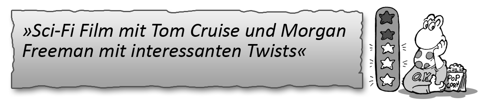

Sense8
Wo: Netflix (Ab dem 05.06.2015)
Handlung: Es gibt eine Handvoll Menschen auf der Welt, die nach einem tragischen Todesfall miteinander telepathisch kommunizieren können. Natürlich werden sie von einer düsteren Organisation gejagt und sind einem dunklen Geheimnis auf der Spur.
Terminator - Die Erlösung
Wo: Watchever
Handlung: Skynet hat den Krieg angefangen und versucht durch zeitreisende Terminatoren den Widerstand der Menschheit zu brechen bevor er anfängt. Dieser Film zeigt, warum Skynet so versessen ist John Connor umzubringen, bevor dieser Leiter des Widerstandes wird.
Oblivion
Wo: Amazon Prime Instant Video
Handlung: Nach einem Krieg gegen Aliens ist die Erde verwüstet und wird nur noch zum Abbau von Ressourcen verwandt. Einige Techniker und Drohnen überwachen den Prozess und werden immer wieder von Plünderern angegriffen. Techniker Jack Harper findet jedoch bald heraus dass nicht alles so ist wie es scheint.

Sie Leben!
Wo: SkySnap
Handlung: Der arbeitslose Ölarbeiter John kommt nach Los Angeles und sucht Arbeit. Menschen die gegen den Status Quo aufbegehren werden brutal unterdrückt. Schon bald findet er eine Sonnenbrille die ihm die Wahrheit aufzeigt. Und diese Wahrheit ist, dass er kein Kaugummi mehr hat.
District 9
Wo: Maxdome
Handlung: Über Johannisburg in Südafrika ist ein UFO gestrandet. Die aus dem UFO stammenden insektoiden Flüchtlinge wurden im Lager District 9 untergebracht und sollen jetzt verlegt werden, was den Bürokraten Wikus in arge Bedrängnis bringt.